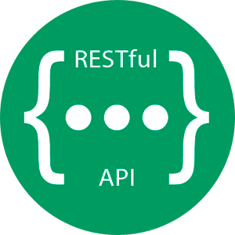
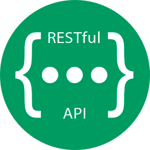

Welcome, dear guest! This website was created to inform about the technology that covers all spheres of our life and sufficiently facilitates them - the World Wide Web, or briefly the Web. There are 5 main subpages where you can observe detailed info about the Web and its elements. This site was prepared by the group ABAA. Members of this group you may look at the credits page.
How much do you know about the Web?
Novice
You don't know anything about general Web concepts and can't use them on practice.
Moderate user
You know general Web concepts, yet you cannot exploit this knowledge during Web development
Professional
You know all concepts of the Web and utilize them on practice in Web development.
Happy birthday, Web!
In this year the World Wide Web celebrated its own 33th birthday. Thanks to it, people can find any interesting information about our world, share their own ideas with others and assist people in need. Tim Berners-Lee can be justifiably considered as the founding father of the Web since, in 1989, being the worker of CERN, he proposed the idea of interconnected web pages in his work “Information Management: A Proposal”. When we observe the history of Web, it is generally reckoned that the Web had 3 stages of its evolution. Now we are gonna discuss these stages.
Web 1.0
It represents the basic of web it was used even in 2003, invented by Tim Berners-Lee and it is just the readable site with raw data of the World Wide Web. The user can only Search and read the information through browser, he cannot share and commend on the site. In other words, it is static (fixed) information. In Web 1.0, a few of person that must have knowledge of how the webpages are designed (interlinked) can create and modified the webpages compare with large number of users there not necessary to have knowledge about how the webpages are designed. In the Web 1.0 technique, some companies design applications that allow users download information from the web, but users did not see the procedure of how the applications works. Protocols used in Web 1.0 are HTML, HTTP and URL. In addition, technologies used in Web 1.0 like XML, XHTML and CSS. There are combined technologies between server and client such as ASP, PHP, JSP, CGI, and PERL. The server side used JavaScript, VBscript and Flash on a client. Web 1.0 is very slow, and a user used to refresh the site every time when new information added to the web pages. The Web’s 1.0 problem is that it just works in one direction, yet the user cannot post or modify the webpage.


XML, Extensible Markup Language
PHP, web script language
Perl, high-level interpreted language
Web 2.0
It is the second version of the Web. In 2004 it was presented formally by Dale Dougherty who was vice-president of O’Reilly Media. It is also called the read and write Web (writable), since it was representing a new method to use current technologies of the Internet, and the Web could become bidirectional. Actually, the Web 1.0 presents to a user accessing possibility to upload and download from the webpage like a provider (a site admin), but in limited controlling. In other words, actual interaction of user allows simply upload as well as download. The users of Web 2.0 had more interaction with less control. Technology infrastructure of Web 2.0 consist of some rules such as RSS, Atom, RDF which were used by the designer for creation of the Web 2.0 services, also the Web 2.0 uses Ajax technology in the Internet such as JavaScript and XML, DOM, REST, XML and CSS. The Web 2.0 allows the users the ability to creation social activities and communicates with each other. But these properties also consider issues because the user can be hacked in privacy and personal information security.
 

RDF, Resouce Description Framework, W3C standard originally designed as a data model for metadata.
RSS, Really Simple Syndication, web feed that allows users and applications to access updates to websites
REST, Representational State Transfer, transfer protocol
Web 3.0
It is also the third and current version of the Web launched in 2014 known as the executable Web that allows a user to interact with dynamic applications. In other words, sometimes it is called the Semantic Web and personalization. The Web 3.0 will be a complete reinvention of the Web. According to Conrad Wolfram’s theory about the Web 3.0, it will try to make the computer be able thinking and more intelligent for search about new data instead of humans. The Web 3.0 is the new method that used in various fields of IT. In other words, at this stage the Web is converted into huge database.


Bitcoin, decentralized cryptocurrency
Brave, open-source browser of new generation
Steemit, blockchain-based blogging and social media website
What's the Web?
So what is the Web? According to Mozilla Developer Network Web docs glossary, the World Wide Web, or WWW, or W3, or the Web is an interconnected system of public web pages accessible through the Internet. Nowadays an enormous number of people wrongly estimate that terms “Internet” and “the World Wide Web” are equivalent. Nonetheless, it is considered as an inappropriate statement since the Internet is the global system of interconnected computer networks. In other words, the Web is accessible through the Internet and it is one of many applications built on the top of the Internet. To organize interaction between Internet users between each other or the Web system standardized technologies and protocols were created. First of all, we will discover web technologies.


The World Wide Web
The Internet
MDN, education web development platform
Web's features
To begin with, web technology refers to a tool or technique that is used among devices on the Internet. Currently there are a lot of web technologies which are divided into front-end (client-side) and back-end (server-side) technologies. Despite the fact that both front-end and back-end technologies play a significant role in web development, our research group decided to observe in our report only technologies implemented on the client side since only this type of technologies is regulated and standardized by the World Wide Web Consortium (W3C), whereas the choice of back-end technologies is up to web developers. At this time there are a lot of front-end technologies, yet the most eminent ones are HyperText Markup Language (HTML), Cascading Style Sheets (CSS), JavaScript (JS) and etc.


Front-end and back-end, two sides of web development
W3C, World Wide Web Consortium
HTML, Hyper Text Markup Language
HTML
Firstly, HTML as the dominant web markup language (about 93.5% of websites use HTML) is ubiquitous in web development. Being a standard web technology, it informs web browsers about the structure and presentation of a web page. As we look at the structure of HTML documents, we might notice that the syntax consists of common text and tags. Reading these tags, web browsers get information about the structure of web pages and relations between elements of Document Object Model (DOM), the tree of web components. HTML tags are divided into visible and non-visible tags, or closed and enclosed tags. Whereas visible tags directly format the structure of a web page by adding visible changes, non-visible tags indirectly affect the web page’s appearance. The brightest example of a non-visible tag is the <header> tag. This tag plays a crucial role in the structure of a web page because JS files, libraries, CSS stylesheets are included in this tag. Nonetheless, if you just add this tag to the HTML document, changes will not occur.
To write some HTML code you have to use some text redactors or IDE. For example, we prefer WebStorm. Nonetheless, html code of a website can be edited in browsers using their internal DevTools. In the case of Google Chrome, you might press F12 to open this console
WebStorm, IDE for web development
DevTools of Google
CSS
Initially, HTML was also responsible for formatting the style of a web page. It can still be noticed by users while observing legacy HTML documents. For instance, the tag <h1> is rather a stylistic tag than a semantic one because it directly changes text’s appearance, making its font size bigger. Moreover, tags’ attributes like align (align the element relatively to a page) used to visually present web pages too. However, in the course of time web developers decided to create another technology for formatting a page’s style, Cascading Style Sheets, for following reasons:
CSS can do:
-
2D animations
-
3D animations
-
Elements' customization
Without CSS we wouldn't have seen websites with good design. For instance, that's how this webpage looks without implementing CSS.
JS
JavaScript is the programming language of the Web. Nowadays this language prevails at the majority of web pages, apps and also is implemented at all modern web browsers. Besides web development, over the last decade, JS is also used in software development . For instance, more and more server developers tend to utilize and launch servers on Node.js, the open-source server environment based on JavaScript. Though, why do web developers prefer Javascript over other programming languages? There are several reasons of this phenomenon such as:
To begin with, JavaScript was invented in 1995 by Brendan Eich. Therefore, It is a relatively fresh programming language, compared to such modern programming languages, such as Pascal (1970), C (1973), C++ (1983) and others.
Moreover, JavaScript is the dynamic typed language. In other words, it has following advantages: a) an user should not explicitly declare data type of a variable; b) a variable can change its datatype throughout a program; c) dynamically typed languages are better interpreted than statically typed ones; d) it is more comfortable to read a code.
In addition, this programming language is both suited for both major programming patterns: functional and object-oriented.
Finally, it has special syntax implemented to work with web browsers.

Brendan Eich, the founder of JS
"Hello, world!" code written on JS
We have prepared some samples of JS-based small web applications. Here below the list of them:
URL
URL (Uniform Resource Locator) is nothing more than the address of a given unique resource on the Web. Tim Berners-Lee and his Internet Engineering Task Force working group developed the first URL in 1994. In theory, each valid URL points to a unique resource. Such resources can be an HTML page, a CSS document, an image, etc. In practice, there are some exceptions, the most common being a URL pointing to a resource that no longer exists or that has moved. As the resource represented by the URL and the URL itself are handled by the Web server, it is up to the owner of the web server to carefully manage that resource and its associated URL. A standard URL includes the following elements: Protocol used to access the resource, Location of the related server, Location of the resource in a directory structure.

Structure of URL
DNS
The Domain Name System (DNS) is the Internet's system for mapping alphabetic names to numeric Internet Protocol (IP) addresses like a phone book that maps a person's name to a phone number. For example, when a Web address (URL) is typed into a browser, a DNS query is made to learn an IP address of a Web server associated with that name. The DNS system is an open worldwide network of database name servers that include 13 authoritative name servers that serve the DNS root zone level, known as "root servers''. A root server (also called a DNS root name server) receives a DNS query that includes a domain name, and responds by directing that request to a top-level domain (TLD) nameserver, based on the TLD of that domain such as .com, .net, and .org. It directly responds to requests for DNS records in the root zone by returning an appropriate list of the authoritative TLD name servers for the appropriate TLD that can resolve the initial DNS lookup request for an IP address of that domain name.

Algorithm of DNS
HTTP
HTTP (HyperText Transfer Protocol) request is the way internet communications platforms such as web browsers ask for the information they need to load a website. Each HTTP request made across the Internet carries with it a series of encoded data that carries different types of information. A typical HTTP request contains:
HTTP version type;
URL;
HTTP method;
HTTP request headers
Optional HTTP body
As a request-response protocol, HTTP gives users a way to interact with web resources such as HTML files by transmitting hypertext messages between clients and servers. HTTP clients generally use Transmission Control Protocol (TCP) connections to communicate with servers.
S on the HTTPS protocol stands for "Secure," which means your browser and the website you are connected to will encrypt your communication. No 3rd party can track your data without permission, thanks to the Secure characteristic. Therefore, Google strictly recommends using HTTPS protocol while developing a website URL.


HTTP protocol
HTTPS protocol
TLS
Transport Layer Security (TLS) is a protocol that can be used with other protocols like UDP to provide security between applications communicating over an IP network. TLS uses encryption to ensure privacy, so that other parties can’t eavesdrop or tamper with the messages being sent. Using TLS, a secure connection is established by authenticating the client and server, or User Agent Client and User Agent Server, and then encrypting the connection between them. Transport Layer Security is a successor to Secure Sockets Layer (SSL), which was developed by Netscape. Even though it is based on SSL 3.0,TLS is a standard that has been defined in RFC 2246, and is designed to be its replacement. In this standard, TLS is designed as a multilayer protocol that consists of TLS Handshake Protocol and TLS Record Protocol.

TLS algorithm
Modern usage
If we are going to discuss the vitality and usage of the Web, we will find out that we cannot imagine our lives without the World Wide Web because it sufficiently simplifies all processes occurring in current society. These days the Web covers the next spheres of humanity’s life:
Information Technologies;
Science;
Education;
Services to civilians;
Business processes;
Personal leisure;
Communication.


IT
Science
Education
Credits
This project was made by us, the research group ABAA.
ABAA, the research group
Team members:
Mussabayev Azimzhan
- Collecting and an analysis of information about the definition of the Web and its features;
- Creating a website.
Myrzakhanov Alisher
- Collecting and an analysis of information about the history of the World Wide Web;
- Collecting and an analysis of information about web protocols.
Zhonkebayev Bauyrzhan
- Creating a web application by utilizing described web technologies;
- Creating web applications.
Oryntayev Alizhan
- Collecting and an analysis of information about modern usage of the Web.
References:
Berners-Lee, T. (1989). Information Management: A Proposal. CERN.
Flanagan, D. (2020). Javascript: The Definitive Guide, 7th edition. O'Reilly Media, Inc.
Gillies, J. M. & Cailliau, R. (2000). How the Web was born: The story of The World Wide Web. Oxford University Press.
Jacksi, K. & Abass, S. M. (2019). Development History Of The World Wide Web. International Journal Of Scientific & Technology Research. 8(9), 75-76.
Nurpeisova T. B. & Kaidash I. N. (2017). Information and communication technologies. Bastau.
Powell, T. A. (2010). HTML & CSS: The Complete Reference, Fifth Edition. McGraw-Hill Companies.